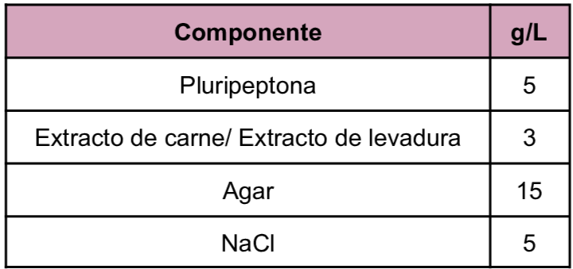
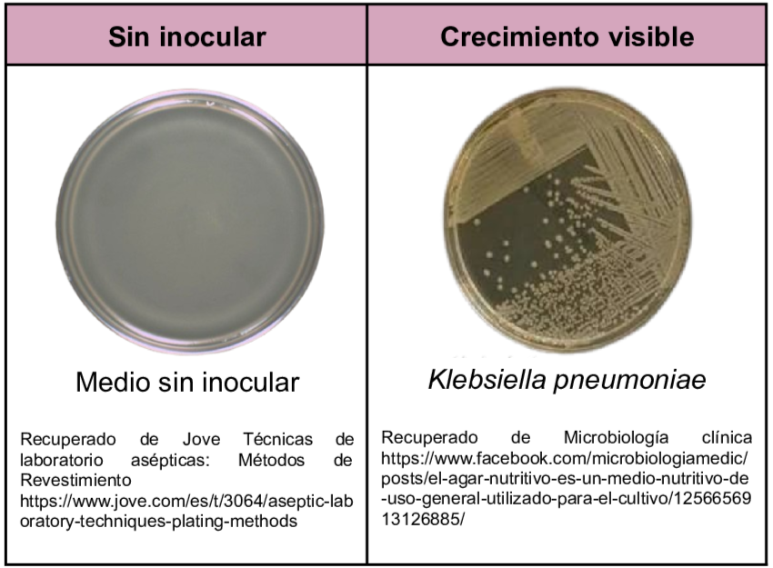
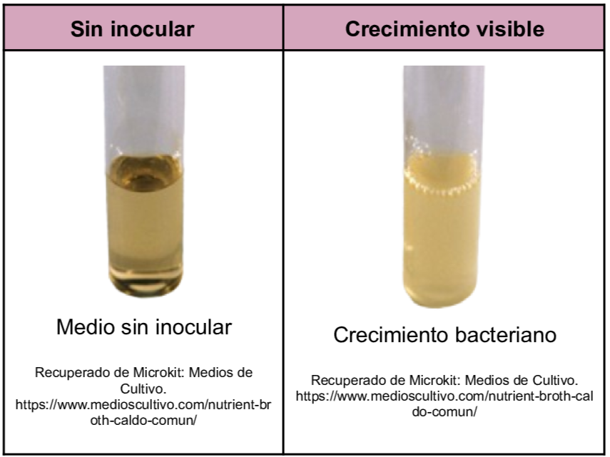

Medio de cultivo para todo tipo de bacteria aunque generalmente se usa para microorganismos con bajos requerimientos nutricionales siendo utilizado para el aislamiento de dichos microorganismos y para el conteo de estos. Es implementado en el análisis de alimentos, agua y monitoreo ambiental.
La pluripeptona y el extracto de carne serán la fuente de carbono y nitrógeno por lo que se tendrá un desarrollo bacteriano. El agar actúa como un agente solidificante en caso de no ser caldo.
Composición

pH casi neutro (6.8) a 25°C
Resultados Posibles
Se puede esperar un crecimiento variado dependiendo del microorganismo inoculado, las colonias recuperadas a partir de este medio son funcionales para pruebas bioquímicas.
Agar nutritivo: Crecimiento visible de las colonias

Caldo Nutritivo: Crecimiento visible por turbidez

Referencias
Britania(2011) Nutritivo Agar. https://amyd.quimica.unam.mx/pluginfile.php/9875/mod_folder/content/0/Agar%20nutritivo.pdf?forcedownload=1
Romero, G. (2023) “Guía General de Medios de Cultivo Utilizados en la Industria” [Tesis de Licenciatura, Universidad Nacional Autónoma de México]. Repositorio DGBSDI. https://ru.dgb.unam.mx/server/api/core/bitstreams/30f99386-fb11-4b83-8931-b260bbcd5eef/content